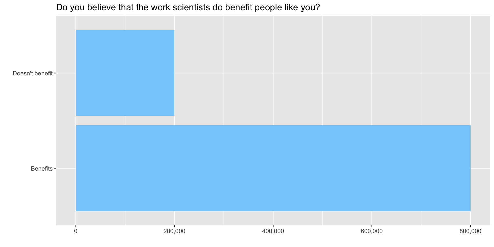

The decimal point is 1 digit(s) to the left of the |
20 | 0000
19 | 000000
18 | 00000
17 | 0
16 | 0
15 |
14 |
13 | 0
12 |
11 |
10 | 0
9 |
8 |
7 |
6 |
5 |
4 |
3 |
2 |
1 |
0 | 0Stats: Foundations for Inference
Mick McQuaid
2024-10-14
Week SIX
Homework
Milestone 1
Some Milestone 1 remarks
- Foxtrot: need clearer data definitions—e.g., what are the classes in MSSubClass?
- Foxtrot: good job on data cleaning—may want to say why you removed outliers
- Foxtrot: may want to substitute
skim()forsummary() - Foxtrot: good insights, but may want to interleave some with stats
- Foxtrot: some of your insights may lead to dropping columns, e.g., garage size
More Milestone 1 remarks
- Echo: please use the
STATS_DATA_DIRvariable - Echo: need clearer data definitions—e.g., what are the classes in MSSubClass?
- Echo: may want to use
mutate(across(where(is.character), as.factor)) - Echo: may want to substitute
skim()forsummary() - Echo: may not need to mention that 1 room houses are unpopular
- Echo: good insights on foundations
- Echo: should get more out of Table 4 (characterize different neighborhoods)
- Echo:
GarageAreaunlikely to matter; need better choice forstem()
Still More Milestone 1 remarks
- Charlie: good job on data dictionary
- Charlie: need to show code for outlier deletion
- Charlie: good insights in summary section
- Charlie: good takeaways but may need to intersperse with contingency tables
Even More Milestone 1 remarks
- Alpha: omit directives in angle brackets
- Alpha: may want to use base R pipe (
|>) instead of Magritte pipe (%>%) - Alpha: may want to specify order with
order=TRUEorfct_reorder(Name,value1, value2, ...) - Alpha:
YearBuiltandYearRemod/Addare integers not numeric - Alpha: move barplot to visual description
- Alpha: YrSold and MoSold insight needs work; same for Neighborhood and HouseStyle
- Alpha: ExterQual and SaleCondition may be irrelevant
Slow ggplotting
https://evamaerey.github.io/ggplot_flipbook/ggplot_flipbook_xaringan.html#1
Inference
Point estimates
Example: Biden’s approval rating is 41.4% (Five-Thirty-Eight, 2024-09-27). This is a point estimate.
How good is this point estimate? Two factors are sampling error and bias.
- Who’s in the sample?
- How big is the sample?
- How was the question phrased?
Variability of a point estimate
Simulated example: support for solar energy in the USA
- Suppose we know that 88% support it
- Suppose the population is 250m
- How variable would be an estimate from a sample of 1,000 people?
R code for the example
#. 1. Create a set of 250 million entries, where 88% of them are "support"
#. and 12% are "not".
popSize <- 250000000
possibleEntries <- c(rep("support", 0.88 * popSize), rep("not", 0.12 * popSize))
#. 2. Sample 1000 entries without replacement.
sampledEntries <- sample(possibleEntries, size = 1000)
#. 3. Compute p-hat: count the number that are "support", then divide by
#. the sample size.
(phat <- sum(sampledEntries == "support") / 1000)[1] 0.889This estimate, 0.889, differs every time we sample. Let’s look at a different sample from the textbook’s lab website.
Global Monitor
The Wellcome Global Monitor project finds that 20% of people worldwide don’t think that the work of scientists benefits people like them. Let’s simulate this situation using the tidyverse.
The Global Monitor situation
(Of course it’s unrealistic to pretend there are only 1 million people worldwide or that you could ask all of them what they think.)
Visualize the situation
Verify correct construction of the data frame
Sample 50 people
Find the sample mean
Now sample 15,000 times
Histogram of 15,000 samples
Why does the result look like a normal distribution?
(Answer: because of the central limit theorem)
And how could you verify that it does?
(Answer: construct a qq-plot)
central limit theorem
Here’s the definition of the central limit theorem.
For large sample sizes, the sample mean \(\overline{y}\) from a population with mean \(\mu\) and standard deviation \(\sigma\) has a sampling distribution that is approximately normal, regardless of the probability distribution of the sampled population.
Why care about the central limit theorem?
In business, distributions of phenomena like waiting times and customer choices from a catalog are typically not normally distributed, but instead long-tailed. The central limit theorem means that resampling the mean of any of these distributions can be done on a large scale using the normal distribution assumptions without regard to the underlying distribution.
Payoff of the central limit theorem
This simplifies many real-life calculations. For instance, waiting times at each bus stop are exponentially distributed but if we take the mean waiting time at each of 100 bus stops, the mean of those 100 times is normally distributed, even though the individual waiting times are drawn from an exponential distribution.
Conditions for the central limit to hold
Let \(p\) be the parameter of interest, in this case a proportion. (This not the same thing as a \(p\)-value, which we will explore later.) We don’t know \(p\) unless we examine every object in the population, which is usually impossible. For example, there are regulations in the USA requiring cardboard boxes used in interstate commerce to have a certain strength, which is measured by crushing the box. It would be economically unsound to crush all the boxes, so we crush a sample and obtain an estimate \(\hat{p}\) of \(p\). The estimate is pronounced p-hat.
Characterizing the central limit theorem
The central limit theorem can be framed in terms of its mean and standard error:
\[ \mu_{\hat{p}}=p \qquad \text{SE}_{\hat{p}} = \sqrt{\frac{p(1-p)}{n}} \]
Conditions for the central limit theorem
The conditions under which this holds true are
- The sample observations are independent of each other
- The sample is sufficiently large that the success-failure condition holds, namely \(np\geqslant10\) and \(n(1-p)\geqslant10\).
When are observations mutually independent?
The sample observations are independent if they are drawn from a random sample. Sometimes you have to use your best judgment to determine whether the sample is truly random. For example, friends are known to influence each other’s opinions about pop music, so a sample of their opinions of a given pop star may not be random. On the other hand, their opinions of a previously unheard song from a previously unheard artist may have a better chance of being random.
These conditions matter when conducting activities like constructing a confidence interval or modeling a point estimate.
Sampling variability
It is often the case that \(\hat{p}\) is a plausible point estimate of a proportion. But it has sampling variability.
Sampling leads to a new statistic.
If we take more and more samples from a given population, the variability of the samples will decrease. This relationship gives rise to the standard error of an estimate \[\sigma_{\hat{p}}=SE_{\hat{p}}=\frac{\sigma}{\sqrt{n}}\]
The standard error of the estimate, often abbreviated \(SE\), is not exactly the standard deviation. It is the standard deviation divided by some function of the sample size and it shrinks as the sample size grows.
Confidence Intervals
Because of sampling variability, it’s always better practice to provide a confidence interval around a point estimate rather than the point estimate alone.
The confidence interval consists of two numbers, a lower bound and an upper bound, and we say that, if we collected an infinite number of samples of point estimates, \(x\) percent of them would would capture \(p\) within the lower and upper bound. \(x\) is usually 90 or 95 in practice.
A 95 percent confidence interval operationalized
Establishing a 95 percent confidence interval
If we know (because of the central limit theorem) that the sample is drawn from a normal distribution, and we know from the mechanics of the normal distribution that 95 percent of the data lies within 1.96 standard deviations of the mean, we can construct the 95 percent confidence interval as the point estimate \(\hat{p}\) \(\pm 1.96 \times SE\). And we define the standard error of the proportion as
\[\sqrt{\frac{p(1-p)}{n}}\]
Example of a 95 percent confidence interval
For the solar power example given in the textbook,
\[\hat{p}\pm 1.96 \times SE_{\hat{p}} \rightarrow 0.887 \pm 1.96 \times 0.010 \rightarrow (0.8674,0.9066)\]
which is expressed in words as We are 95 percent confident that the actual proportion of American adults who support expanding solar power is between 86.7 percent and 90.7 percent. It is also common to say instead that 89 percent of Americans support expanding solar power (with a margin of error of 1.96 percent).
Other confidence intervals
We could substitute 2.576 for 1.96 to obtain a 99 percent confidence interval. For a 90 percent confidence interval, substitute 1.645.
Plausibility vs possibility
Confidence intervals provide only a plausible range for a population parameter, not the possible range. Some estimates will lie outside the confidence interval.
Hypothesis testing
Hypotheses
Hypothesis tests concern two hypotheses, the null hypothesis (written \(H_0\) and pronounced H-nought), and the alternative hypothesis (written \(H_A\) and pronounced H-A). If there’s more than one alternative, they are usually numbered (\(H_1,H_2,\ldots\)).
The null and alternative hypothesis
The null hypothesis ordinarily represents the status quo or some skeptical belief about a new outcome, while the alternative hypothesis ordinarily represents an optimistic belief about the outcome under study, such as the effect of a new drug, where the null hypothesis would say that the drug has no effect and the alternative hypothesis is that it cures condition \(xyz\).
Why would we phrase them this way? It is because we want to partition the risk of failure. To do that, we need the concepts of Type I and Type II error.
Type I error and Type II error
Unfortunately, statisticians use the word error in two completely different ways, to mean variability and to mean mistakes. In the case of Type I and II error, we’re talking about mistakes.
Definition of Type I error
- Rejecting \(H_0\) when it’s true
- False positive
- Finding an innocent person guilty
Definition of Type II error
- not rejecting \(H_0\) when it’s false
- False negative
- Finding a guilty person innocent
| Test conclusion | |||
|---|---|---|---|
| do not reject \(H_0\) | reject \(H_0\) | ||
| Truth | \(H_0\) is true | okay | Type I error |
| \(H_0\) is false | Type II error | okay | |
Decision errors partition risk
We want mistakes to have the fewest possible negative consequences.
Therefore we make it more likely to make a Type II error than a Type I error instead of making them equally likely.
This is why \(H_0\) reflects a skeptical or status quo belief. We expect there to be some weight of experience behind the status quo.
This partitioning of mistakes has wider applicability
Later, we’ll hear a bit about classification as used in data science and information retrieval and elsewhere. Next are the classification results and metrics used in various disciplines.
Possible results of classification (James et al. (2021), Table 4.6)
| True class | ||||
|---|---|---|---|---|
| \(-\) or Null | \(+\) or Non-null | Total | ||
| Predicted class | \(-\) or Null | True Negative (TN) | False Negative (FN) | N\(*\) |
| \(+\) or Non-null | False Positive (FP) | True Positive (TP) | P\(*\) | |
| Total | N | P | ||
Synonyms for important measures (James et al. (2021), Table 4.7)
| name | definition | synonyms |
|---|---|---|
| False Positive rate | FP/N | Type I error, 1 \(-\) Specificity |
| True Positive rate | TP/P | 1 \(-\) Type II error, power, sensitivity, recall |
| Positive Predictive value | TP/P\(*\) | Precision, 1 \(-\) false discovery proportion |
| Negative Predictive value | TN/N\(*\) |
More Testing Hypotheses
Now we return to hypothesis testing to develop a plan for hypothesis testing
p-values
So far, we’ve used the letter \(p\) to refer to proportions. It is much more common in statistics to use it when referencing the ubiquitous \(p\)-value, whose definition is quite problematic. The \(p\)-value is the most misused concept in statistics!
Definition of the p-value
The \(p\)-value is the probability of observing an outcome at least as favorable to the alternative hypothesis as what we’ve observed if the null hypothesis is true.
The null hypothesis and the alternative hypothesis are mutually exclusive, but we don’t just say we favor one or the other. We couch it in the language of probability.
Misstating the p-value
It is tempting, but very incorrect to say that the \(p\)-value is the probability of the null hypothesis.
The correct language for defining the \(p\)-value is awkward and so people often give an abbreviated and misleading version of it.
The \(\alpha\) value
Find a probability to estimate a mean.
Estimating a mean involves finding a region where the mean is likely to be. The first question to ask is how likely? and to do so, we use a concept called alpha, denoted by the Greek letter \(\alpha\). Traditionally, people have used three values of \(\alpha\) for the past century, .10, .05, and .01. These correspond to regions of \(1-\alpha\) under the normal distribution curve, so these regions are 90 percent of the area, 95 percent of the area, and 99 percent of the area. What we are saying, for instance, if \(\alpha=0.01\) is that we are 99 percent confident that the true population mean lies within the region we’ve calculated, \(\overline{y}\pm 2.576\sigma_{\overline{y}}\)
\(\alpha\) selection is driven by criticality.
Traditionally, \(\alpha=0.01\) is used in cases where life could be threatened by failure.
Traditionally, \(\alpha=0.05\) is used in cases where money is riding on the outcome.
Traditionally, \(\alpha=0.10\) is used in cases where the consequences of failing to capture the true mean are not severe.
Pictures of the alpha levels
The following pictures show these three cases. The first version, life-or-death, has the smallest rejection region. Suppose the test is whether a radical cancer treatment gives longer life than a traditional cancer treatment. Let’s say that the traditional treatment gives an average of 15 months longer life. The null hypothesis is that the new treatment also gives 15 months longer life. The alternative hypothesis is that the radical treatment gives 22 months more life on average based on on only five patients who received the new treatment. A patient can only do one treatment or the other. The status quo would be to take the traditional treatment unless there is strong evidence that the radical treatment provides an average longer life.
Minimizing the chance of mistake
In the following pictures, the shaded area is where the test statistic would have to fall for us to say that there is strong evidence that the radical treatment provides longer life. We want to make that shaded region as small as possible so we minimize the chance our test statistic lands in it by mistake.
We can afford to let that shaded area be bigger (increasing the chance of mistakenly landing in it) if only money, not life, is riding on the outcome. And we can afford to let it be bigger still if the consequences of the mistake are small. To choose an \(\alpha\) level, ask yourself how severe are the consequences of a Type I error.
General picture
Life or death
Money riding on it
Consequences not severe
Large samples and small samples
In the preceding pictures, we used \(z\)-scores. This is fine for a large sample. For a small sample, \(n<30\), we use the \(t\)-statistic instead. This is because, for a small sample, the \(t\)-distribution is a better approximation than the normal distribution.
Estimate a population mean
First, find a confidence interval.
If the sample is larger than or equal to 30, use the formula for finding a large-sample confidence interval to estimate the mean.
A large-sample \(100(1-\alpha)\%\) confidence interval for a population mean, \(\mu\), is given by
\[\mu \pm z_{\alpha/2} \sigma_{\overline{y}} \approx \overline{y}\pm z_{\alpha/2} \frac{s}{\sqrt{n}}\]
For a small sample, use \(t\).
If the sample is smaller than 30, calculate a \(t\)-statistic and use the formula for finding a small-sample confidence interval to estimate the mean.
The \(t\)-statistic you calculate from the small sample is \[ t=\frac{\overline{y}-\mu_0}{s/\sqrt{n}} \]
Compare t to alpha
Does your calculated \(t\) fit within a \(100(1-\alpha)\%\) confidence interval? Find out by calculating that interval. A small-sample \(100(1-\alpha)\%\) confidence interval for a population mean, \(\mu\), is given by
\[\mu \pm t_{\alpha/2} s_{\overline{y}} \approx \overline{y}\pm t_{\alpha/2,\nu} \frac{s}{\sqrt{n}}\] Here, you are using a \(t\) statistic based on a chosen \(\alpha\) to compare to your calculated \(t\)-statistic. The Greek letter \(\nu\), pronounced nyoo, represents the number of degrees of freedom.
practice estimating a population mean
Consider an outlet store that purchased used display panels to refurbish and resell. The relevant statistics for failure time of the sample are \(n=50, \overline{y}=1.9350, s=0.92865\).
But these are the only necessary numbers to solve the problem. The standard error, .1313, can be calculated from \(s/\sqrt{n} = 0.92865/\sqrt{50}=.1313.\)
First, find the 95% confidence interval, which can be calculated from the above information. Since the sample is greater than or equal to 30, we use the large sample formula: \[\begin{align*} \overline{y}\pm z_{\alpha/2} \sigma_{\overline{y}} \approx \overline{y}\pm z_{\alpha/2} \frac{s}{\sqrt{n}} &= 1.9350 \pm 1.96 (.1313) \\ &= 1.9350 \pm 0.2573 \\ &= (1.6777,2.1932) \end{align*}\] The correct answer to a question asking for the confidence interval is simply that pair of numbers, 1.6777 and 2.1932.
Now interpret that. This result says that we are 95% confident that the true average time to failure for these panels is somewhere between 1.6777 years and 2.1932 years. It is tempting to rephrase the result. Be careful that you don’t say something with a different meaning. Suppose the store wants to offer a warranty on these panels.
Knowing that we are 95% confident that the true mean is in the given range helps the store evaluate the risk of different warranty lengths. The correct answer is to say that we are 95% confident that the true mean time to failure for these panels is somewhere between 1.6777 years and 2.1932 years.
The meaning of the 95 percent confidence interval is that, if we repeatedly resample the population, computing a 95% confidence interval for each sample, we expect 95% of the confidence intervals generated to capture the true mean.
Any statistics software can also offer a graphical interpretation, such as a stem-and-leaf plot or histogram.
Test a hypothesis about a population mean
Choose a null and alternative hypothesis.
Testing a hypothesis must be done modestly. As an example of what I mean by modestly, consider criminal trials in the USA. The suspect on trial is considered innocent until proven guilty. The more modest hypothesis (the null hypothesis) is that the person is innocent. The more immodest hypothesis (the alternative hypothesis) carries the burden of proof.
Type I error is worse than Type II error.
The traditional view of the legal system in the USA is that if you imprison an innocent person, it constitutes a more serious error than letting a guilty person go free.
Imprisoning an innocent person is like a Type I error: we rejected the null hypothesis when it was true. Letting a guilty person go free is like a Type II error: we failed to reject the null hypothesis when it was false.
Identify rejection region marker
How do you identify rejection region markers? A rejection region marker is the value of a test statistic that leads to rejection of the null hypothesis. It marks the edge of a region under the curve corresponding to the level of significance, \(\alpha\). The marker is not a measure of the size of the region. The rejection region marker can vary from \(-\infty\) to \(+\infty\) while the size of the region is somewhere between zero and one.
The following table shows the relevant values of \(\alpha\) and related quantities.
| \(1-\alpha\) | \(\alpha\) | \(\alpha/2\) | \(z_{\alpha/2}\) |
|---|---|---|---|
| .90 | .10 | .05 | 1.645 |
| .95 | .05 | .025 | 1.96 |
| .99 | .01 | .005 | 2.576 |
The preceding table refers to two-tailed tests. Only examples (e) and (f) below refer to two-tailed tests. In the other four cases, the \(z\)-scores refer to \(z_{\alpha}\) rather than \(z_{\alpha/2}\).
(a) \(\alpha=0.025\), a one-tailed rejection region
(b) \(\alpha=0.05\), a one-tailed rejection region
(c) \(\alpha=0.005\), a one-tailed rejection region
(d) \(\alpha=0.0985\), a one-tailed rejection region
(e) \(\alpha=0.10\), a two-tailed rejection region
(f) \(\alpha=0.01\), a two-tailed rejection region
Test a hypothesis about a sample mean
The test statistic is \(t_c\), where the \(c\) subscript stands for calculated. Most people just call it \(t\). In my mind, that leads to occasional confusion about whether it is a value calculated from a sample. We’ll compare the test statistic to \(t_{\alpha,\nu}\), the value of the statistic at a given level of significance, identified using a table or calculator.
The test leads to two situations. The first, pictured next, is the situation where we fail to reject the null hypothesis and conclude that we have not seen evidence in the sample that the point estimate differs from what the modest hypothesis claims it is. Often, this is an estimate of a mean, where the population mean, \(\mu_0\), is being estimated by a sample mean, \(\bar{y}\). The following picture doesn’t show \(\bar{y}\), just the tail. \(\bar{y}\) would be at the top of the hump, not shown here.
The preceding possibility shows the situation where \(t_{\alpha,\nu}>t_c\), which is equivalent to saying that \(p>\alpha\).
The \(x\)-axis scale begins to the left of the fragment shown here, and values of \(t\) increase from left to right. At the same time, the shaded regions decrease in size from left to right. Note that the entire shaded region above is \(p\), while only the darker region at the right is \(\alpha\).
The situation pictured next is the reverse. In this situation, we reject the null hypothesis and conclude instead that the point estimate does not equal the value in the modest hypothesis. In this case \(t_{\alpha,\nu}<t_c\), which is equivalent to saying that \(p<\alpha\).
Let’s make this more concrete with an example.
Suppose that a bulk vending machine dispenses bags expected to contain 15 candies on average. The attendant who refills the machine claims it’s out of whack, dispensing more than 15 candies on average, requiring more frequent replenishment and costing the company some extra money. The company representative asks him for a sample from the machine, so he produces five bags containing 25, 23, 21, 21, and 20 candies. Develop a hypothesis test to consider the possibility that the vending machine is defective. Use a level of significance that makes sense given the situation described above.
There are seven steps to solving this problem, as follows.
Step 1. Choose a null hypothesis.
At a high level, we can say that we are trying to choose between two alternatives:
- that the machine is defective, or
- that the machine is operating normally.
We need to reduce this high level view to numbers. The problem states that the machine is expected to dispense 15 candies per bag, on average. This is equivalent to saying that the true mean is 15 or \(\mu=15\).
If the machine is defective in the way the attendant claims, then \(\mu>15\). So we could say that one of the hypotheses would be that the sample came from a population with \(\mu=15\) and the other hypothesis would be that the sample did not come from a population with \(\mu=15\). Which should be the null hypothesis?
The null hypothesis represents the status quo, what we would believe if we had no evidence either for or against. Do you believe that the machine is defective if there is no evidence either that it is or isn’t?
If we have no evidence one way or the other, assume the machine is operating normally. We can translate this into the null hypothesis \(\mu=15\). The formal way of writing the null hypothesis is to say \(H_0: \mu=\mu_0\), where \(\mu_0=15\). Later, when we refer to this population mean, we call it \(\mu_0\) because it is the population mean associated with the hypothesis \(H_0\). So later we will say \(\mu_0=15\).
At the end of step 1, we have chosen the null hypothesis: \(H_0: \mu=\mu_0\) with \(\mu_0=15\).
Step 2. Choose the alternative hypothesis.
The appropriate alternative hypothesis can be selected from among three choices: \(\mu<\mu_0\), \(\mu>\mu_0\), or \(\mu \ne \mu_0\). The appropriate choice here seems obvious: all the sample values are much larger than \(\mu_0\), so if the mean we calculate differs from \(\mu_0\) it will have to be larger than \(\mu_0\). If all the values in our sample are larger than \(\mu_0\), there is just no way their average can be smaller than \(\mu_0\).
At the end of step 2, we have determined the alternative hypothesis to be
\(H_A: \mu>\mu_0\) with \(\mu_0=15\).
Step 3. Choose the test statistic.
Previously, we have learned two test statistics, \(z\) and \(t\). We have learned that the choice between them is predicated on sample size. If \(n\geqslant30\), use \(z\), otherwise use \(t\). Here \(n=5\) so use \(t\). We can calculate the \(t\)-statistic, which I called \(t_c\) for calculated above, for the sample using the formula \[ t_c=\frac{\overline{y}-\mu_0}{s/\sqrt{n}} \]
We can calculate the values to use from the following formulas or by using a machine.
\[\overline{y}=\sum{y_i}/n=22\]
\[s=\sqrt{\frac{\sum y_i^2 - n(\overline{y})^2}{n-1}}=2\]
\(\mu_0\) was given to us in the problem statement and \(\sqrt{n}\) can be determined with the use of a calculator or spreadsheet program. The calculated \(t\)-statistic is \(t_c=(22-15)/(2/\sqrt{5})=7.8262\).
At the end of step 3, you have determined and calculated the test statistic, \(t_c=7.8262\).
Step 4. Determine the level of significance, \(\alpha\).
You choose the appropriate value of \(\alpha\) from the circumstances given in the problem statement. Previously in class, I claimed that there are three common levels of significance in use: 0.01, 0.05, and 0.10. I gave rules of thumb for these three as 0.01 life-or-death, 0.05 money is riding on it, and 0.10 consequences not severe. In this case, the consequences seem to be a small amount of money lost by the company if they are basically giving away candies for free. I suggest that this is a case where some money is riding on it so choose \(\alpha=0.05\).
At the end of step 4, you have determined \(\alpha=0.05\).
Step 5. Identify the rejection region marker.
This is simply a matter of calculating (or reading from a table) an appropriate \(t\)-statistic for the \(\alpha\) you chose in the previous step. This is \(t_{\alpha,\nu}=t_{0.05,4}=2.131847\). Note that \(\nu\) is an old-fashioned symbol for df, or degrees of freedom. It is a Greek letter pronounced nyoo. For a single sample \(t\)-statistic, df\(=\nu=n-1\).
This can be found using R by saying
At the end of step 5, you have calculated the location of the rejection region (but not its size). It is located everywhere between the \(t\) curve and the horizontal line to the right of the point \(t=2.131847\).
Step 6. Calculate the \(p\)-value.
This is the size of the region whose location was specified in the previous step, written as \(p=P(t_{\alpha,\nu}>t_c)\). It is the probability of observing a \(t\)-statistic greater than the calculated \(t\)-statistic if the null hypothesis is true. It is found by a calculator or app or software. It can only be calculated by hand if you know quite a bit more math than is required for this course.
In this case \(p=P(t_{\alpha,\nu}>t_c)=0.0007195\).
We can identify both \(t_\alpha\) and \(t_c\) using R as follows.
[1] 2.131847[1] 0.04999999
One Sample t-test
data: x
t = 7.8262, df = 4, p-value = 0.0007195
alternative hypothesis: true mean is greater than 15
95 percent confidence interval:
20.09322 Inf
sample estimates:
mean of x
22 Also note that the \(t\) test tells us that the true mean is far from 15. If we tested repeatedly, we would find that it is greater than 20.09322 in 95 percent of the tests.
At the end of step 6, we have calculated the \(p\)-value, \(p=P(t_{\alpha,\nu} > t_c)=0.0007195\).
Step 7. Form a conclusion from the hypothesis test.
We reject the null hypothesis that \(\mu=\mu_0\), or in other words, we reject the hypothesis that these five bags came from a vending machine that dispenses an average of 15 candies per bag. Notice we don’t say that the machine is defective. Maybe the data were miscounted. We don’t know. We have to limit our conclusion to what we know about the data presented to us, which is that the data presented to us did not come from a machine that dispenses an average of 15 candies per bag.
To summarize the answer, the seven elements of this statistical test of hypothesis are:
- null hypothesis \(H_0: \mu=15\)
- alternative hypothesis \(H_{A}: \mu>15\)
- test statistic \(t_c=7.8262\)
- level of significance \(\alpha=0.05\)
- rejection region marker \(t_{0.05,4} = 2.131847\)
- \(p\)-value \(P(t_{\alpha,\nu}>t_c)=0.0007195\)
- conclusion Reject the null hypothesis that these five bags came from a machine that dispenses an average of 15 candies per bag.
Conclusion
Let’s return to the two pictures we started with. Notice that \(p<\alpha\) in this case, which is equivalent to saying that \(t_c>t_{\alpha,\nu}\), so we are looking at the second of the two pictures.
References
James, Gareth, Daniela Witten, Trevor Hastie, and Robert Tibshirani. 2021. An Introduction to Statistical Learning, 2nd Edition. Springer New York.
Colophon
This slideshow was produced using quarto
Fonts are Roboto Condensed Bold, JetBrains Mono Nerd Font, and STIX2